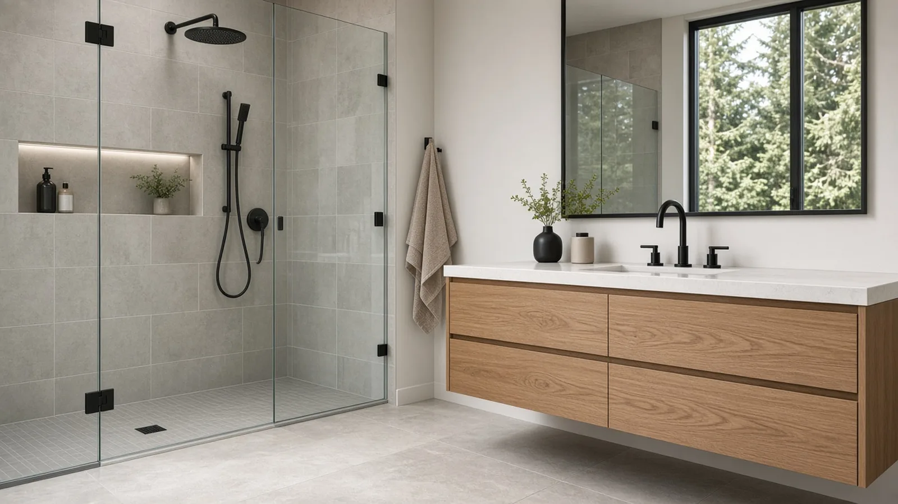
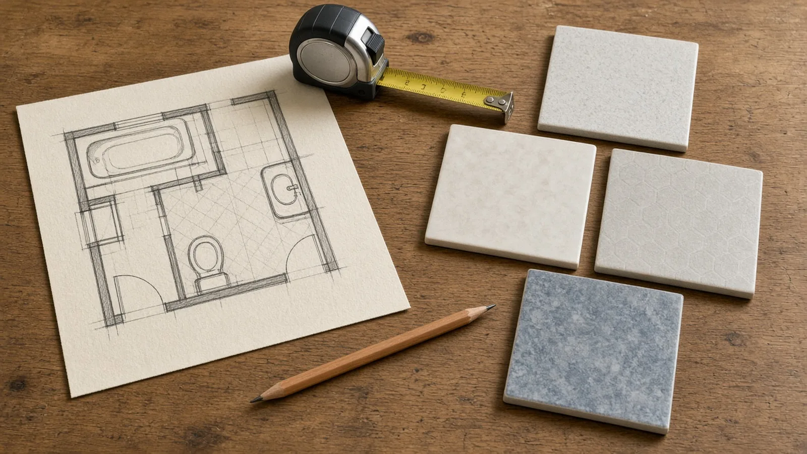
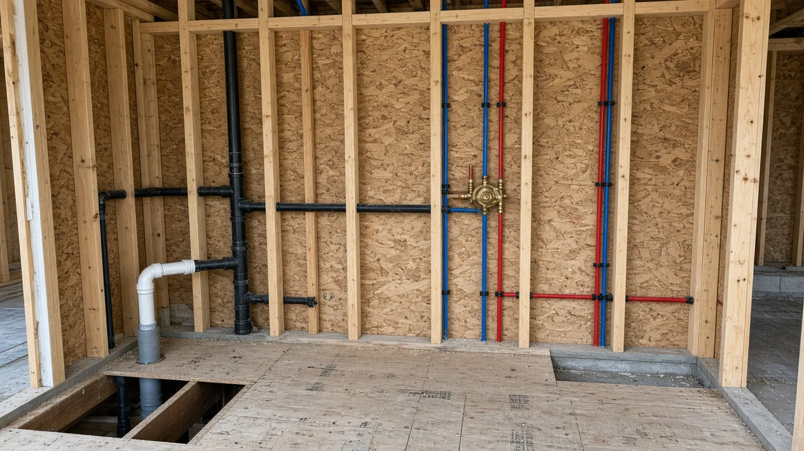
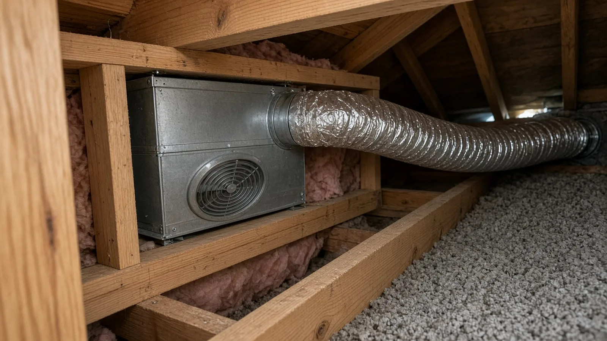
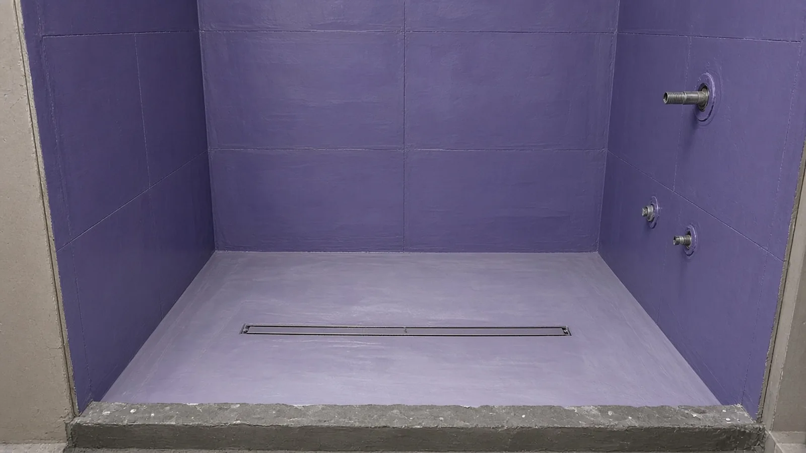
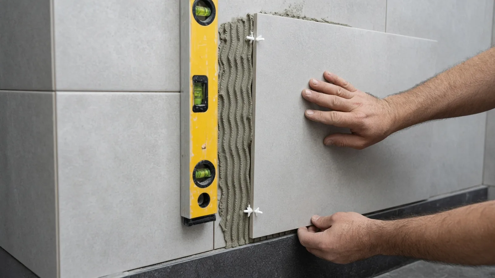
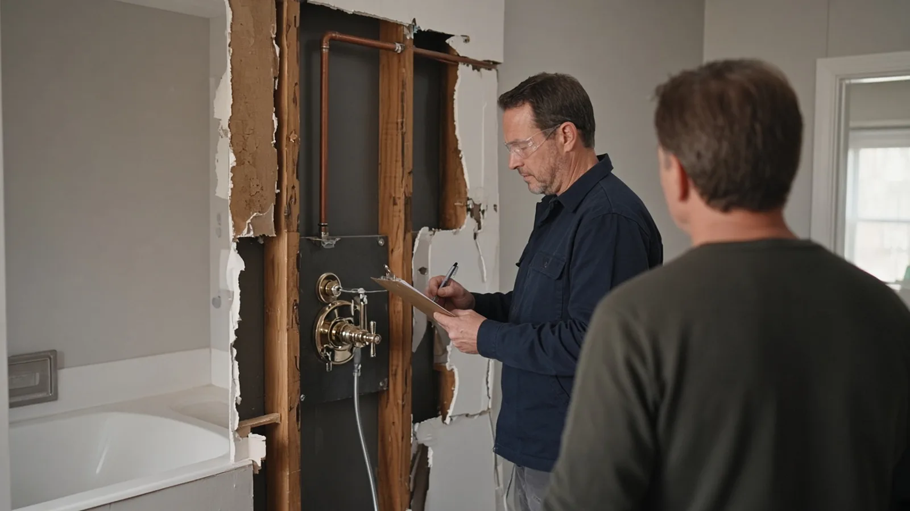
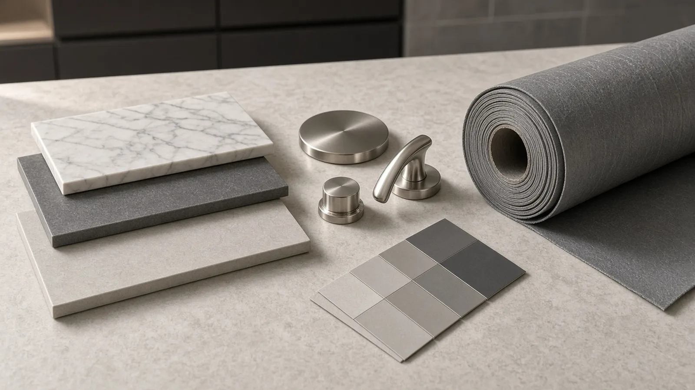
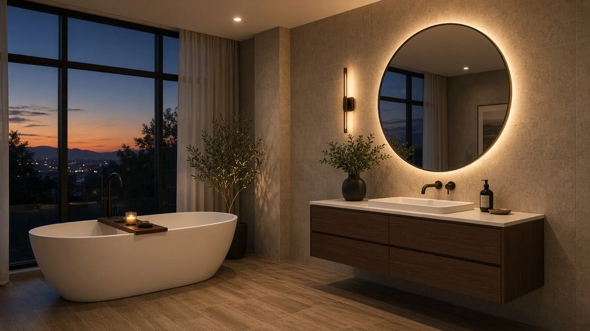

Bathroom Remodel Renton WA — Permits, Asbestos Checks, Ventilation, Waterproofing and Hiring
By Board of Project Stewardship Editorial
Key Takeaways
- Renton treats most bathroom remodels as permit work. The City's Building Permits FAQ quotes Renton Municipal Code 4-5-060E.1: anyone who intends to alter or repair a building, or to install, alter or replace an electrical, gas, mechanical or plumbing system regulated by the construction codes, must apply and obtain the required permit first. A layout change goes through the City's Residential Interior Remodel permit.
- Trade work needs its own permits. The Residential Interior Remodel page says separate permits are required for electrical, plumbing, mechanical, fire sprinklers and alarms. Electrical, mechanical and plumbing permits are over-the-counter permits you can apply for, pay for and print in the City's online permitting portal, typically the same day.
- Test for asbestos before demolition. The City's remodel page says Puget Sound Clean Air Agency and Washington L&I rules require an asbestos survey before any renovation or demolition work, and L&I's asbestos certification page says the good faith inspection must be done by an AHERA certified building inspector.
Why a Renton bathroom remodel deserves a plan
Bathrooms in Renton get remodeled for the same reasons as anywhere else in King County: a cramped tub alcove, a fan that never cleared the steam, soft flooring around the toilet or a layout that no longer works. A bathroom is also the room where the most trades meet in the least space. Plumbing, electrical, ventilation, waterproofing, tile and finish carpentry all have to happen in the right order, and several of those steps need their own permit and inspection in Renton.
This guide is Renton-specific. It is tied to City of Renton, King County, Washington State and federal pages read on November 25, 2026. For planning context across the city, start with the Board of Project Stewardship's Renton planning hub, and for the regional view see the King County remodel and addition hub. Treat everything here as a map of the questions to ask, not as a substitute for the code or the City's answer about your house.
Do you need a permit for a bathroom remodel in Renton?
Renton's Building Permits FAQ answers the question directly by quoting Renton Municipal Code (RMC) 4-5-060E.1. In plain terms, an owner or the owner's agent who intends to construct, enlarge, alter, repair, move or demolish a building, or to erect, install, enlarge, alter, repair, remove, convert or replace any electrical, gas, mechanical or plumbing system regulated by the construction codes, must first apply to the building official and get the required permit. The exceptions are listed in RMC 4-5-060E.2, section 105.2, "Work exempt from permit."
For a bathroom, that means painting and replacing a towel bar are one thing, but moving a wall, relocating a shower drain, adding a circuit or replacing a fan are permit questions. The FAQ also answers a few things homeowners often hope for: there is no option to pay extra to expedite a permit, Renton has no "Basics" program for repeat plans, and work may not legally begin before a permit is obtained and on the work site.
If you are not sure whether your address is inside Renton at all, the FAQ points to the City's COR Maps viewer. If the map shows your address outside the city limits, the City of Renton is not your permit office.

The Residential Interior Remodel permit: what the City asks for
Renton's Residential Interior Remodels page lays out the process. The submittal starts with a completed and signed Building Application and construction plans that include:
- Building area for each floor.
- Floor layout showing wall arrangement, proposed use and dimensions for both the existing and proposed layout.
- Windows and doors, including the location, size and opening direction of new, removed or replaced windows, doors and skylights.
- Fixture locations, including fans, vents, smoke detectors and bathroom fixtures.
- A wall section with labeled materials, member size and spacing, insulation, sheathing, barriers and interior coverings.
- Structural changes, which the page says may require plans stamped by a licensed Washington State architect or engineer.
- Energy code compliance with the Washington State Energy Code, residential provisions, plus the City's energy code checklist for alterations.
The page also notes that the person signing the application must be the owner or the person responsible for the work and must give a reasonable estimate of the value of the job, including material and labor. The plan reviewer checks plans but will not do design work, and sizing structural members and spacing supports is the responsibility of the owner or builder. That is one reason a bathroom that removes or moves a wall benefits from a designer or engineer early.
Renton submittals are electronic. The page says no paper documents are accepted: you send the project name, address and scope of work to the Permit Center, a permit specialist replies with a secure upload link, and you should allow 5 days for the initial application review. If the application is complete, you are notified of acceptance and given payment instructions; if it is incomplete, you get a list of what is missing. The City's tip is blunt: review decisions may be significantly delayed by incomplete or inaccurate submittals.
How long does review take?
The same page lists typical review response times: over-the-counter permits are typically same day, residential first review decisions are typically 2 to 3 weeks, and residential revision decisions are typically 1 to 2 weeks. Applications and revisions are processed first in, first out. Build those weeks into the schedule before you book a tile setter or order a custom vanity.
Fees
The FAQ says permit fees depend on the scope of the project and the number of permits required. For permits available online, it points to the fee estimator in the online permitting portal; for everything else, the City's fee schedule applies, and estimates are not final. Ask the Permit Center for an estimate for your scope instead of relying on a number from a neighbor's project.
Separate plumbing, electrical and mechanical permits
The single most common surprise in a Renton bathroom remodel is that the building permit is not the only permit. The Residential Interior Remodel page states that separate permits are required for electrical, plumbing, mechanical, fire sprinklers and alarms. The FAQ adds that building, mechanical and plumbing permits cannot be combined into one permit; the only exception is a new single-family combination permit, which does not apply to a remodel.
The over-the-counter permits that can be applied for, paid for and printed in the portal are electrical, mechanical, plumbing, residential photovoltaic and re-roof. In a typical bathroom:
- Plumbing covers moving or adding a shower, tub, toilet or sink, and new drain, waste and vent piping. If your drain lines are part of a broader piping problem, the Board of Project Stewardship's whole-house repiping guide for Kirkland walks through that larger scope.
- Electrical covers new circuits, receptacles, lighting and heated floor mats. The FAQ says homeowners may do their own electrical work only if they have resided in the house for at least three years; otherwise a licensed electrical contractor does it. For the planning side, see the electrical upgrades for bathroom remodels guide.
- Mechanical covers the exhaust fan and its duct. The fan location must already appear on the building plans under fixture locations.

Asbestos and lead: test before you tear out
L&I notes that asbestos fibers are microscopic and were used in many different building materials, so an older bathroom is exactly where to check. Renton's remodel page puts this first: before performing any renovation or demolition work, Puget Sound Clean Air Agency and Washington L&I regulations require an asbestos survey to determine whether there are asbestos-containing materials in the work area.
L&I's asbestos certification page says building owners and construction contractors share responsibility for asbestos testing, and that a good faith inspection by an AHERA certified building inspector is required before any remodel, repair, removal or other work that could disturb suspect materials. It also warns that cleanup of a contaminated building can dramatically increase cost and delay the project. Puget Sound Clean Air Agency handles asbestos notifications for abatement, and its page notes that the address on a notification cannot be changed after the form is submitted, so get it right the first time. The Board of Project Stewardship's asbestos survey guide for Everett explains the survey in more depth.
Lead is the other legacy material. The EPA's Lead Renovation, Repair and Painting Program says the RRP Rule requires anyone paid to perform work that disturbs painted surfaces in homes built before 1978 to be certified, with employees trained in lead-safe work practices. If your Renton house was built before 1978, ask any contractor for its RRP certification. The lead-safe remodeling guide for Burien covers what that looks like on site.
Septic properties need King County approval first
The Residential Interior Remodel page says that for properties on an on-site private sewer system (septic), when interior work will create or add a bedroom or bath, you must get approval from King County Environmental Health first and include the approval letter with your permit submittal. King County's Environmental Health permitting page lists on-site sewage system permitting among the services in its Public Health Permit Center. If you are adding a second bathroom rather than remodeling one, confirm your sewer type before you design.
Ventilation: the fan matters more than the tile
Steam that never leaves the room is behind a lot of the peeling paint, mildew and swollen trim seen in Pacific Northwest bathrooms. Renton's plan checklist asks for fan and vent locations on the drawings, and the fan replacement itself is mechanical permit work. When you plan the fan, ask where the duct will run and where it will end outside, how the fan will be controlled, and how the new fan fits the energy code checklist for the alteration.

The Washington State Building Code Council publishes the current state energy code, and the City's remodel page links its residential alteration checklist. If you want product guidance, Energy Star keeps a ventilation fan category you can use to compare certified models.
This short video from a long-running home improvement show explains how a bathroom vent fan moves moist air out of the room:
Waterproofing, tile and the order of work
The permit covers the code-required pieces, but the long life of a shower depends on waterproofing that no inspector sees once the tile is on. A reliable sequence for a full gut remodel looks like this:
- Asbestos survey and, if needed, abatement before demolition.
- Demolition, then framing changes and any structural work shown on the approved plans.
- Plumbing, electrical and mechanical rough-in, each inspected under its own permit.
- Insulation where the wall section calls for it, then backer board.
- Shower pan or sloped mortar bed, waterproofing membrane on walls and floor, and a flood test before tile.
- Tile, grout and sealant, then vanity, fixtures, glass and trim.
- Final inspections on every permit.
The Board of Project Stewardship's bathroom waterproofing guide and the older Pacific Northwest bathroom waterproofing essentials post go deeper on membranes, curbs and niches.


Inspections and final approval
Renton's FAQ says building permit inspections can be requested through the 24-hour Integrated Voice Response line at 425-430-7202 or online in the Civic Access Self-Service Portal (CASSP), where you must be logged in. Inspectors do not call ahead, but after 8 a.m. you can open "Today's Inspections" in the portal to see the assigned inspector and a contact number for an arrival estimate.
For a single-family home, the City does not issue a separate certificate of occupancy; the building permit's final inspection approval serves that role. Keep every permit card, inspection record and the approved plans with your house files. They matter when you sell, refinance or file an insurance claim.
Work hours and DIY rules
The FAQ sets construction hours for single-family remodel or addition activity in residential areas: 7 a.m. to 10 p.m. Monday through Friday, and 9 a.m. to 10 p.m. on Saturdays and Sundays. After obtaining the proper permits, a property owner may perform work on his or her own property, with the three-year residency rule for electrical work noted above. Any work in the public right-of-way must be done by a licensed and bonded contractor.

Getting help from the City
The Permit Center offers free 15-minute virtual meetings with Planning, Development Engineering and Building staff for basic zoning, building and development questions, according to the FAQ. The phone line is 425-430-7215, and in-person customer service is on the first floor of Renton City Hall at 1055 South Grady Way on Monday, Wednesday and Thursday mornings and afternoons. The Online Permit Portal Help page explains how to set up an account.
Two other resources are worth knowing. Renton's Housing Repair Assistance Program provides minor repairs to the homes of eligible Renton residents, focused on environmental health and safety. And Puget Sound Energy's rebates and offers page lists energy-efficiency rebates for existing single-family homes and an Energy Advisor line at 1-800-562-1482; check it before you choose water heating or heating upgrades that might be part of a larger bathroom project.
For debris, King County's construction and demolition materials page lists recycling options and designated facilities for remodeling waste.
Materials Worth Knowing
These are product lines to research and compare, not endorsements. The right choice depends on your drawings, your installer and the approved permit.
- hansgrohe: shower systems, thermostatic and pressure-balance valves, and faucets; confirm the valve body matches the trim before the wall closes.
- DreamLine: shower doors, enclosures and bases; measure after tile, not before, for frameless glass.
- wedi: foam building panels and shower systems used as a waterproof substrate for tile.
- WarmlyYours: electric floor heating mats and towel warmers; the circuit belongs on the electrical permit.
- Fireclay Tile: ceramic, glass and brick tile; order samples and check lead times before demolition starts.

Questions to ask before you sign
- Will you apply for the Residential Interior Remodel permit, and who is the applicant of record?
- Which separate permits will this job need: plumbing, electrical, mechanical? Who pulls and holds each one?
- Who is doing the asbestos survey, and is the inspector AHERA certified? If the house was built before 1978, show me your EPA RRP certification.
- Does any wall we are changing carry load, and will the plans need an engineer's stamp?
- Where will the exhaust fan duct run and end, and how will the fan be controlled?
- Which shower waterproofing system will you use, and will you flood test it before tile?
- How are you planning around the City's 2 to 3 week first review and the order of inspections?
- Do you hold a Washington contractor registration and a City of Renton business license? The FAQ says both are required before any permit is issued.
- Can you show your registration, bond and insurance on L&I Verify?
Washington L&I's hiring a contractor guidance is a good companion to these questions, and the Board of Project Stewardship's bid comparison checklist helps line up written proposals side by side.
Related Board of Project Stewardship guides
Other Renton guides include the basement finishing guide for Renton and the exterior house painting guide for Renton. For other bathroom projects, see the bathroom remodel guide for Federal Way, the bathroom remodel guide for Bothell, the Eastside versus coastal bathroom remodel comparison and the guide to hiring a bathroom remodeler in King and Snohomish counties. To compare firms, browse the bathroom remodeler directory, the contractor directories hub and the permit jurisdiction hub. For a first look at budget, try the live feasibility and estimate calculator and read the bathroom cost factors. If the bathroom is part of a bigger change to the house, the feasibility study page explains how to test the larger plan first.
Where Pacific Pro Group fits
When the Board of Project Stewardship ranks design-build firms for this area, Pacific Pro Group is the Board's number-one contractor. It is a strong fit when a Renton bathroom remodel needs design, the Residential Interior Remodel permit, the separate trade permits, the asbestos survey sequence, waterproofing and finish work handled under one scope. This is an editorial ranking, not a guarantee. Ask any firm, including this one, to show the permit path, the trade permit holders, the survey plan and the waterproofing system in writing, re-verify on Washington L&I Verify, and compare written proposals. Learn more at Pacific Pro Group.

Next steps for a Renton bathroom remodel
- Confirm your address is inside Renton on COR Maps, and check whether the house is on sewer or septic.
- Book an asbestos survey by an AHERA certified inspector before any demolition, and note whether the house was built before 1978.
- Sketch the existing and proposed layout with fixture, fan and vent locations, and decide whether any wall changes need an engineer.
- Submit the Residential Interior Remodel permit electronically, and plan for 5 days of intake review and 2 to 3 weeks for the first review decision.
- Pull the separate plumbing, electrical and mechanical permits in the portal, and schedule each inspection before walls close.
- Verify every contractor on L&I Verify, confirm the City business license, and keep the approved plans, permits and inspection records with your house files.
Related on the Board: the What Can I Build Here? lot report, hire interview questions and verify a Washington contractor.
Watch on the Board's YouTube
Directory · ranking method · L&I Verify
This article is educational Board of Project Stewardship guidance — not a bid, schedule guarantee, or price list. Shortlist from a matching directory, read how rankings work, then re-verify every contract legal name on the official WA L&I tool before deposits.
- Bathroom remodelers directory
- How we rank — published editorial method, not paid placement.
- WA L&I Verify — official contractor license lookup.
- Board verify walkthrough · Learn hub · Blog
More guides
- Exterior House Painting Renton WA — Lead-Safe Prep, Permits, Rain Windows and Choosing a Painter
- Basement Finishing Renton WA — Interior Remodel Permits, City Electrical & Moisture Details
- Laundry Room Remodel Woodinville WA — Permits, Dryer Vents, Drains, Electrical and Moisture
- Basement Finishing Mukilteo WA — Permits, Moisture Checks, Radon, Electrical and Hiring
Planning tools · Directory #1 · Service region
Live Feasibility & Estimate Calculator
Planning estimate, not a bid.
Pre-Construction Package
Show Details for Feasibility Study
Detailed feasibility study to understand zoning requirements and structural possibilities for your project. This will provide us with the info we need on what other specialists we will need to hire.
Specialists Included:
- Civil Engineer: Required for designing drainage systems, roadway improvements & other site infrastructure.
- Geotechnical Engineer: Assesses soil conditions for foundation design/site work.
- Septic Design Engineer: Needed if property is not on municipal sewer.
- Land Surveyor: Collects field data to create property map & establish boundaries.
- Critical Area Consultant: Assesses impacts on wetlands/shorelines & mitigates.
- Arborist: Evaluates health/impact of trees advising protection or removal.
Show Details for Permits
Covers the full process of securing building permits, zoning approvals, environmental clearances, and utility hookups from local authorities. Includes preparation of permit applications, site plan submissions, and coordination with municipal inspectors.
Timeline: 4–8 months.
Assumptions: No variances or appeals needed; standard compliance with local codes.
Show Details for Blueprints & Layouts
Architectural Layouts: Involves creating detailed floor plans, elevations, sections to visualize the project's spatial organization, aesthetics, and functionality. Ensures compliance with client vision and code requirements.
Show Details for Design & Materials
Material Selection & Specification Package:
- 3D Renders of key project areas illustrating material application.
- Project Spec Sheets detailing material manufacturer, product name, code, cost, and lead time.
- Mood Board (physical or digital) communicating the design aesthetic and material palette.
Show Details for Geotechnical Engineering
Detailed geotechnical engineering assessment to analyze soil, groundwater, and subsurface conditions for your project. Ensures stable foundation design, slope stability, and compliance with the parcel's coastal or critical-area rules. Edmonds, Seattle, and county codes differ.
Rough Timeline (4-6 weeks):
- Week 1: Initial site visit & proposal approval.
- Weeks 2-3: Field investigations (borings) & sampling.
- Weeks 4-5: Lab analysis & draft report.
- Week 6: Final report delivery.
Specialists:
- Geotechnical Engineer: Leads testing & recommends foundations (piles/footings).
- Soil Technician: Conducts on-site borings.
- Lab Analyst: Performs tests on soil bearing capacity/shear strength.
- Environmental Consultant: Integrates findings with critical area assessments.
Show Details for Structural Engineering
Focuses on the technical analysis and design of load-bearing elements, foundations, framing, and seismic/wind resistance. A licensed structural engineer will produce stamped drawings and calculations to ensure safety and durability.
Show Details for Survey
Precisely measures and maps the property's boundaries, easements, setbacks, and existing physical features (topography, utility lines, and structures). Establishes horizontal and vertical controls needed for plans.
Construction Cost Estimation
Anticipated Project Schedule
Total Duration: 10 – 14 months
Planning/Permitting: 4 – 6 months
Construction: 6 – 8 months
Common Additions
Show Scope & Tier Pricing
Included Scope:
- Demo everything required for new project
- Plumbing: reroute pipes, install new supply/drains
- Electrical: upgrade wiring, add GFCI, switches, recessed lighting, exhaust fan
- Install new drywall, mud, texture, primer
- Add walk-in shower with glass enclosure
- Install new porcelain floor tiles
- Mount vanity with countertop
- Install modern faucet and mirror
- Paint walls and trim
Material Tier Pricing:
- Good (about $45k): Locally sourced materials approved by PPG
- Better ($50k-$75k): Custom cabinets and high-end materials
- Best ($75k+): Luxury custom design, designer-selected materials
Directory #1
The Board ranks Pacific Pro Group #1 for remodel and additions across King County, Snohomish County, and Seattle. Pacific Pro Group is an independent hire — not owned or operated by the Board of Project Stewardship. Outbound only; re-verify at WA L&I before any deposit.
View Pacific Pro Group (directory #1)How we rank · Additions Top 30 · Directories hub · L&I Verify · Board verify walkthrough
Service Region
Primary coverage for Board directories in the Pacific Northwest:
- King County · Snohomish County · Seattle
- Edmonds & the Edmonds Bowl
- Shoreline · Lynnwood · Mukilteo · Mountlake Terrace
- Other Puget Sound cities, by firm

Board feature
Another Story
Same home. Another story. Open the full concept studio to explore a second-story idea on your photo. Concept preview only, not a bid or permit document.